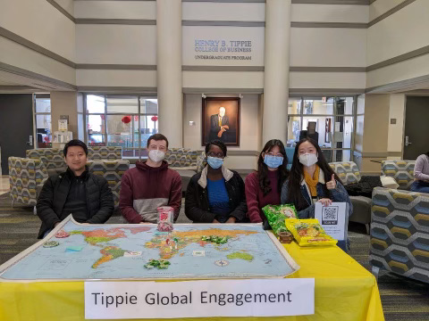
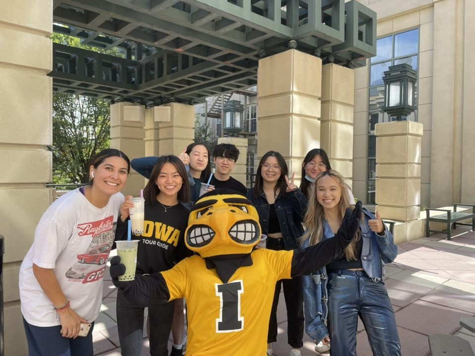

I'm a senior majoring in business analytics and information systems at the University of Iowa. With the abundance of data available to us today, I aim to utilize various data analysis methods to help organizations identify new opportunities and improve their businesses.
Campus Involvement
Global Engagement Student Advisory Board (GESAB)

GESAB is a student advisory board for Tippie College of Business. Board members have monthly meetings with GESAB's advisor to advise and implement initiatives to enhance internationalization and improve students' experience in Tippie.
Tippie Buddies

Tippie International Buddies is a program designed to strengthen bonds between international and American students who are in the pre-business and business department in the University of Iowa. Students are placed into small groups based on their interests giving them the opportunity to make meaningful connections and learn about different cultures.